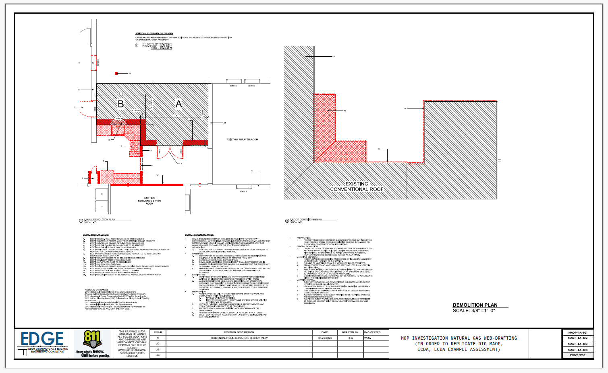

Architectural Digital Blueprints
EDGE combines traditional architectural drafting with modern digital workflows, web technologies, and AI-assisted processes to improve drawing accuracy, collaboration, document control, and project delivery while maintaining compliance with client standards and industry best practices.